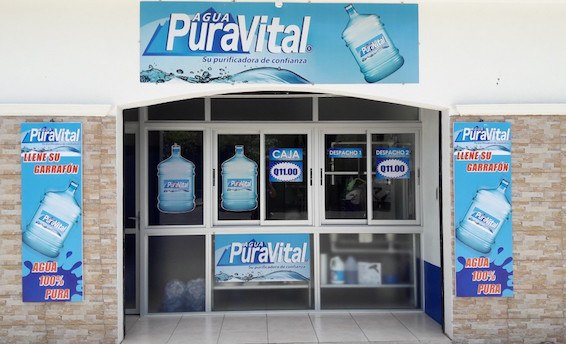

Agua PuraVital® es una empresa líder en el campo de la purificación de agua para el consumo humano desde el año 1998, reconocida por la calidad de sus productos y servicios. Cuenta con plantas de purificación de agua en diferentes puntos de Guatemala.
PuraVital® cuenta con el novedoso sistema de refill o llenado en planta de agua en garrafón donde cada cliente lleva su garrafón, el cual se desinfecta y se llena con agua 100% purificada a un precio que representa un 50% de ahorro en su economía familiar.
Todas las plantas cuentan con su respectiva licencia sanitaria extendida por el ministerio de salud publica y control de alimentos; lo que garantiza la calidad y pureza del agua.

Micro-Franquicias
Microfranquicias de Agua Puravital®
Origen y sustento de la vida en la tierra, el agua es en el Siglo 21 más que nunca el elemento más preciado.
Aquí las tres principales razones:
Las sociedades han tomado conciencia de la importancia de conservarla.
Por otro lado, las nuevas tendencias de consumo de bebidas saludables están reduciendo sensiblemente la participación de mercado de las sodas y esto incrementa el consumo de agua pura.
Al mismo tiempo existen comunidades en las que el abastecimiento público de agua es deficiente y en ocasiones, no necesariamente está purificada para consumo humano.
Esas tres consideraciones ofrecen una enorme oportunidad de mercado para una cadena de venta de agua purificada a nivel de comunidades urbanas y suburbanas, con servicios oportunos y eficientes con un producto seguro para consumo humano.
En Agua ParaVital hemos desarrollado un programa de expansión por medio de micro plantas purificadoras de bajo costo de instalación, una operación simplificada y un alto nivel de ganancias, para satisfacer a un mercado que crece más allá del 20% anualmente.
Es decir que en 5 años, ese mercado duplicará su tamaño.
Estructura de la franquicia Agua PuraVital®
La Franquicia Agua PuraVital® se integra de la siguiente forma:
Un local de 21 metros cuadrados, en comunidades de entre 5 y 20 mil habitantes permanentes.
Instalación de equipos con tecnología de última generación para la purificación segura de agua, que pueden ser operados por una sola persona.
Capacitación al personal que operará la franquicia.
Apoyos publicitarios para la generación de la clientela.
Asistencia permanente en todas las áreas del negocio.
Agua PuraVital® se encargará, íntegramente, del montaje del equipo de producción, de las pruebas correspondientes así como de la capacitación, de tal forma que el franquiciado pueda operar el negocio inmediatamente, sin la necesidad de contar con experiencia previa.
Hemos operado en este nicho de mercado desde el año 1,998. Por lo tanto, disponemos de toda la experiencia así como las herramientas técnicas y mercadológicas para apoyar y lograr un crecimiento sostenido en las próximas décadas.
Seleccionamos el método de expansión mediante franquicias, para dar oportunidad a personas de todo el país de hacerse de un negocio propio, al mismo tiempo que contribuyen a la conservación de la salud de la población y la conservación de ese preciado líquido.
Perfil de los franquiciados de Agua PuraVital®
Buscamos personas, grupos o familias interesados en operar un negocio probado y comprobado con el cual puedan construir un patrimonio para su futuro.